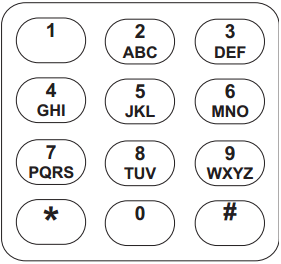

Telefone(){
Maratona
Telefone
As primeiras redes públicas de telefonia foram construídas pela AT&T; no começo do século XX. Elas permitiam que seus assinantes conversassem com a ajuda de uma telefonista, que conectava as linhas dos assinantes com um cabo especial.
Essas redes evoluíram muito desde então, com a ajuda de vários avanços tecnológicos. Hoje em dia, essas redes atendem centenas de milhões de assinantes; ao invés de falar diretamente com uma telefonista, você pode simplesmente discar o número da pessoa desejada no telefone.
Cada assinante recebe um número de telefone - por exemplo, 55-98-234-5678. Qualquer pessoa que discar esse número consegue então falar com a pessoa do outro lado da linha. Os hifens no número de telefone são só para facilitar a leitura, e não são discados no telefone.
Para que fique mais fácil de se lembrar de um número de telefone, muitas companhias divulgam números que contém letras no lugar de dígitos. Para convertê-los de volta para dígitos, a maioria dos telefones tem letras nas suas teclas:

Telefone Pad
[OBI-Unicamp]Ao invés de discar uma letra, disca-se a tecla que contém aquela letra. Por exemplo, se você quiser discar o número 0800-FALE-SBC, você na realidade discaria 0800-3253-722.
A sua avó tem reclamado de problemas de vista - em particular, ela não consegue mais enxergar as letrinhas nas teclas do telefone, e por isso queria que você fizesse um programa que convertesse as letras em um número de telefone para dígitos.
Entrada
A entrada contém um único conjunto de testes, que deve ser lido do dispositivo de entrada padrão (normalmente o teclado). A entrada é composta de apenas uma linha, contendo o número de telefone que deve ser traduzido. O número de telefone contém entre 1 e 15 caracteres, que podem ser dígitos e '0' a '9', letras de 'A' a 'Y' e hifens ('-').
Saída
Seu programa deve imprimir, na saída padrão, uma única linha, contendo o número de telefone com as letras convertidas para dígitos. Hifens no número telefone devem ser mantidos no número de telefone de saída.
Exemplos
-----------------------------------------------------------------------------
ENTRADA:
55-98-234-5678
SAIDA:
55-98-234-5678
------------------------------------------------------------------------------
ENTRADA:
0800-FALE-SBC
SAIDA:
0800-3253-722
------------------------------------------------------------------------------
ENTRADA:
M1S-TU-R4
SAIDA:
617-88-74
------------------------------------------------------------------------------
Referências:
}